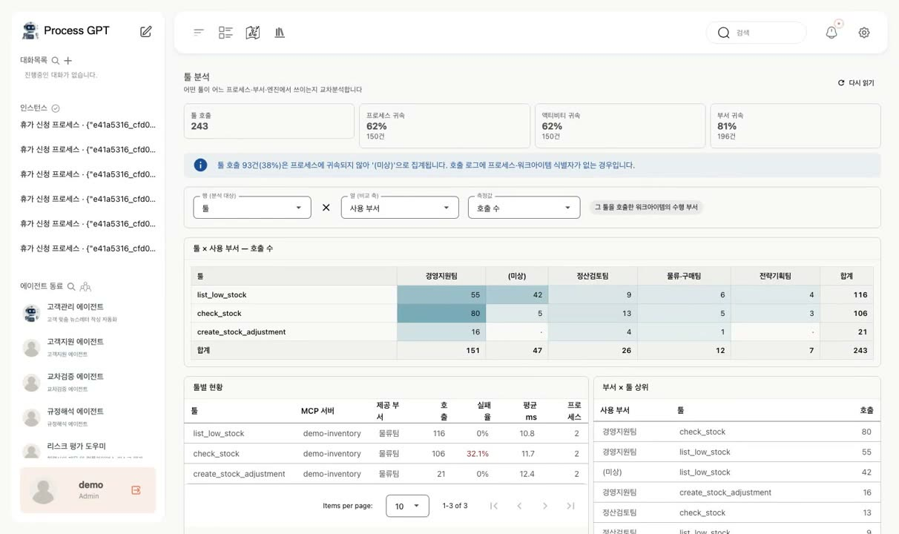
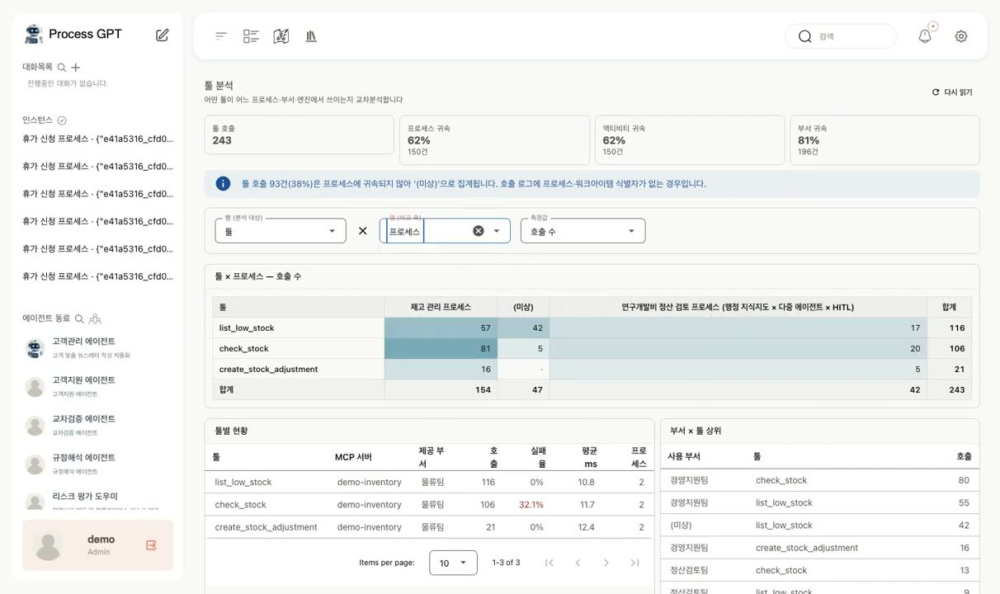
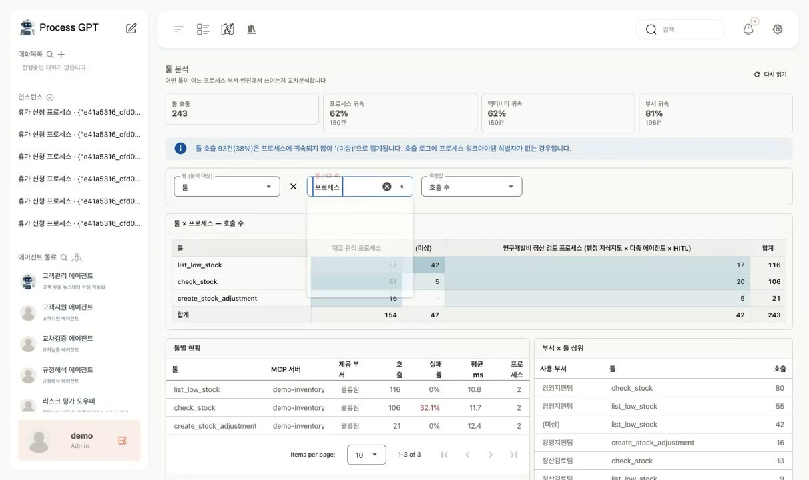
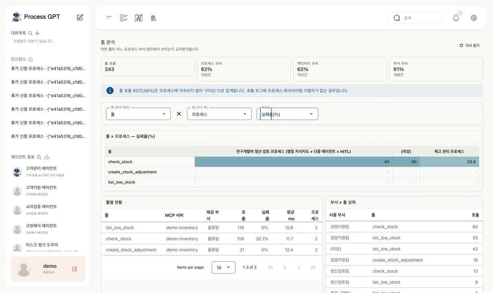
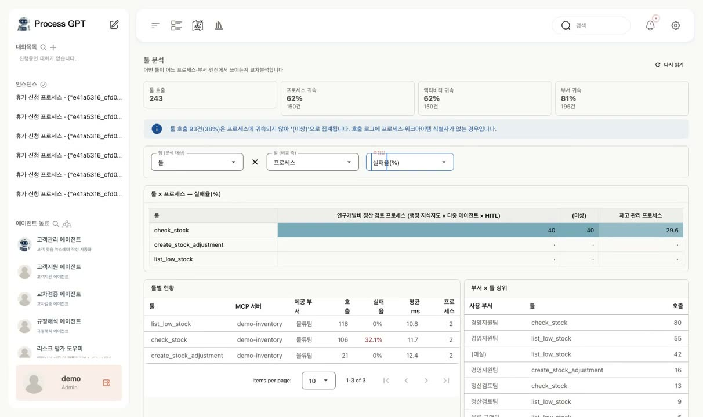

AI 에이전트의 도구 사용 현황과 오류를 분석하는 방법
프로세스를 개선할 때는 보통 업무별 소요 시간과 담당자별 처리량을 확인합니다. AI 에이전트가 업무를 수행하기 시작하면 여기에 한 가지 질문이 더 필요합니다. 에이전트가 사용하는 도구는 어디에서 얼마나 호출되고, 어떤 상황에서 실패할까요?
도구의 호출 기록을 프로세스·부서·실행 엔진과 연결하면 사용 현황과 오류 발생 패턴을 함께 살펴볼 수 있습니다. 이 글에서는 제품 화면의 명칭에 맞춰 도구를 ‘툴’로 표기합니다.
Process GPT의 툴 분석은 이러한 정보를 프로세스 분석 메뉴에서 제공합니다. 분석 대상의 범위를 확인한 뒤 교차표로 사용 현황을 비교하고, 개선이 필요한 지점을 찾는 순서로 살펴보겠습니다.
1. 분석에 포함된 데이터의 범위를 확인합니다
툴 분석 화면은 먼저 호출 기록이 업무 정보와 얼마나 연결되어 있는지 보여 줍니다. 시연의 툴 호출 243건 중 프로세스를 식별할 수 있는 비율과 사용 부서까지 확인할 수 있는 비율을 표시합니다.
일부 호출에 프로세스나 부서 정보가 없다면 분석 결과도 전체 사용 현황을 보여 주지 못할 수 있습니다. 따라서 수치를 해석하기 전에 데이터가 어느 범위까지 연결되어 있는지 확인해야 합니다.

전체 호출 중 프로세스와 사용 부서를 확인할 수 있는 비율을 먼저 표시합니다.
2. 부서·프로세스·실행 엔진별로 사용 현황을 비교합니다
기본 교차표는 행에 툴을, 열에 사용 부서를 표시합니다. 색이 진할수록 호출 횟수가 많습니다. 시연에서는 재고 조회 툴을 경영지원팀이 많이 사용하는 것을 확인할 수 있습니다.
열의 기준과 측정값을 바꾸면 다음과 같은 항목을 비교할 수 있습니다.
- 프로세스별 비교: 같은 툴을 사용하는 업무를 확인합니다. 시연에서는 재고 관리와 정산 검토 프로세스가 같은 툴을 공유합니다.
- 실행 엔진별 비교: 딥 에이전트와 컴플리션 CLI 에이전트가 각각 어떤 툴을 호출하는지 비교합니다. 실행 엔진에 따른 사용 패턴을 살펴볼 수 있습니다.
- 실패율 비교: 호출 횟수 대신 실패율을 표시해 오류가 집중되는 조합을 찾습니다. 시연에서는 재고 확인 툴의 실패가 재고 관리 프로세스에 집중되어 있습니다.

교차표의 열을 부서·프로세스·실행 엔진으로 바꿔 툴 사용 현황을 비교합니다.
▶ 프로세스별 비교: 같은 툴을 사용하는 업무

프로세스를 기준으로 보면 재고 관리와 정산 검토 업무가 같은 툴을 사용한다는 점을 확인할 수 있습니다.
▶ 실패율 비교: 오류가 집중되는 구간

실패율을 선택하면 오류가 집중되는 조합을 확인할 수 있습니다. 실패율은 단순 합산할 수 없으므로 합계 행을 표시하지 않습니다.
3. 실패율과 평균 응답 시간은 단순 합산하지 않습니다
측정값을 실패율로 바꾸면 합계 행이 사라집니다. 비율을 단순히 더한 값을 전체 실패율로 오해하지 않도록 한 설계입니다.
각 셀의 호출 건수가 다르므로 실패율을 더해서는 전체 실패율을 구할 수 없습니다. 전체 실패 건수를 전체 호출 건수로 나누어야 합니다. 평균 응답 시간도 단순 합산할 수 없어 이 화면에서는 합계 행을 제공하지 않습니다.
호출 횟수, 비율, 평균은 집계 방법이 다릅니다. 지표의 성격에 맞게 표시해야 분석 결과를 올바르게 해석할 수 있습니다.
4. 툴을 제공하는 부서와 사용하는 부서를 구분합니다
교차표 아래의 툴별 현황에서는 제공 MCP 서버, 등록 부서, 실패율, 평균 응답 시간, 사용 프로세스 수를 함께 확인할 수 있습니다.
오른쪽에는 사용량이 많은 부서·툴 조합이 표시됩니다. 이때 툴을 제공하는 부서와 실제 사용하는 부서를 구분합니다. 예를 들어 물류팀이 등록한 재고 툴을 경영지원팀이 가장 많이 쓸 수 있습니다. 두 정보를 함께 보면 운영 담당 부서가 어떤 사용 부서와 개선을 협의해야 할지 판단하는 데 도움이 됩니다.
이를 지원하기 위해 데이터웨어하우스에도 MCP 툴·서버별 분류 기준과 툴 사용 집계 구조를 추가했습니다. 서버는 분류, 제공 부서, 개별 서버 순으로 상세 현황을 확인할 수 있도록 구성했습니다.

툴별 운영 지표와 사용량이 많은 부서·툴 조합을 함께 확인합니다. 제공 부서와 사용 부서는 별도로 구분합니다.
5. 호출 기록에 누락된 업무 정보를 보완했습니다
프로세스와 부서별 분석을 제공하려면 호출 기록에 해당 정보가 연결되어 있어야 합니다. 개발 과정에서 다음 두 가지 누락을 보완했습니다. 아래 수치는 당시 점검한 데이터 기준입니다.
- 프로세스 연결 누락: 일부 툴 호출 로그에 인스턴스 ID가 없었습니다. 워크아이템을 통해 연결 관계를 찾아, 프로세스를 식별할 수 있는 호출을 90건에서 150건으로 늘렸습니다.
- 부서 정보 갱신 누락: 점검한 워크아이템 295건의 부서 정보가 모두 비어 있었습니다. 갱신 처리에서 부서 컬럼이 빠져 있어, 나중에 확인된 조직 정보가 기존 기록에 반영되지 않는 문제를 수정했습니다.
분석 화면의 정확도는 원본 기록과 업무 정보의 연결 상태에 달려 있습니다. 차트를 구성하는 작업과 함께 누락된 데이터와 갱신 로직을 점검해야 했습니다.
6. 사용 현황과 오류 패턴을 바탕으로 개선 대상을 정합니다
툴 분석을 통해 프로세스·부서·실행 엔진별 사용량과 실패율을 한 화면에서 비교할 수 있습니다. 자주 쓰이는 툴과 오류가 집중되는 업무를 함께 확인하는 데 유용합니다.
분석 결과를 바탕으로 어떤 툴을 우선 개선할지, 오류 원인을 어느 프로세스에서 조사할지, 어떤 부서와 협의할지 정할 수 있습니다. 다만 실패율만으로 원인을 단정하기보다는 해당 호출의 상세 기록을 함께 확인해야 합니다.
Process GPT에서 확인하기
| 이 글의 개념 | Process GPT의 기능 |
|---|---|
| 툴 호출을 독립적인 분석 대상으로 관리 | MCP 기반 멀티 에이전트 실행 ↗ 소개 페이지에서 보기 |
| 툴 사용 기록을 프로세스·부서와 연결 | BPMN 프로세스 인스턴스·워크아이템 기반 실행 ↗ 소개 페이지에서 보기 |
| 실패 지점을 찾아 개선에 활용 | 실행 기록 기반 자기학습 ↗ 소개 페이지에서 보기 |
툴 분석은 Process GPT의 프로세스 분석 메뉴에 포함되어 있습니다. process-gpt.io에서 직접 확인해 보세요.